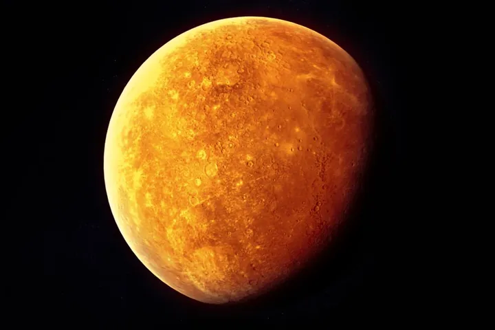

Mercury

Mercury is the smallest and innermost planet in the Solar System. Its orbit around the Sun takes 87.97 days, the shortest of all the planets in the Solar System. It is named after the Roman deity Mercury, the messenger of the gods.
Like Venus, Mercury orbits the Sun within Earth's orbit as an inferior planet, and its appa
rent distance from the Sun as viewed from Earth never exceeds 28°. This proximity to the
Sun means the planet can only be seen near the western horizon after sunset or eastern
horizon before sunrise, usually in twilight. At this time, it may appear as a bright sta
r-like object, but is often far more difficult to observe than Venus. The planet telesco
pically displays the complete range of phases, similar to Venus and the Moon, as it move
s in its inner orbit relative to Earth, which recurs over its synodic period of approximately 116 days.